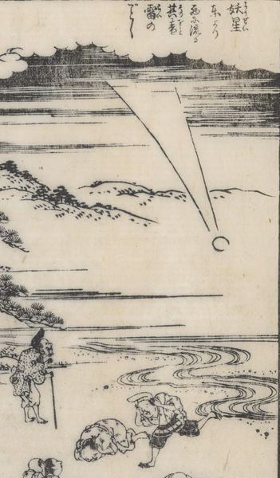

妖星。東から西に流れている。雷のような音に人びとが耳を塞いで逃げている。
著作者：秋里翁・西村中和／出典：親書誌：U426_nichibunken_0446：本朝年代記圖會／日付：2017／資源識別子：U426_nichibunken_0446_0011_0000
Copyright (c)2010- International Research Center for Japanese Studies, Kyoto, Japan. All rights reserved.